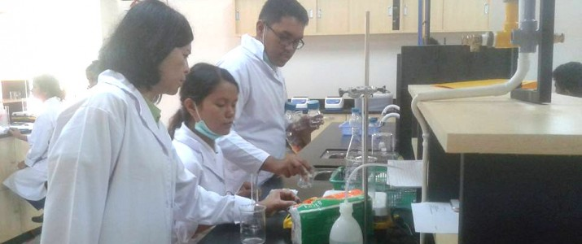

Fakultas Teknik Informatika dan Elektro (FITE) IT Del berdiri pada tahun 2013 seiring dengan
perubahan Politeknik Informatika Del (PI Del) menjadi IT Del.....
2
Fakultas Vokasi
Vokasi merupakan pendidikan tinggi dengan fokus pada praktik kerja yang dapat menunjang
keahlian di bidang studi tertentu. Program vokasi bertujuan mempersiapkan lulusannya menjadi
tenaga yang siap kerja dan mampu bersaing secara global di Dunia Usaha dan Dunia Industri
(DUDI).....
3
Fakultas Bioteknologi

Menjadikan program studi Sarjana Teknik Bioproses menjadi program studi yang unggul secara
nasional dan internasional dalam bidang pendidikan, penelitian, pengembangan dan penerapan
ilmu dan teknologi, serta pengabdian kepada masyarakat....
3
Fakultas Teknologi Industri
Manajemen Rekayasa (Engineering Management) adalah penggabungan dari keilmuan
teknik/rekayasa (engineering) dengan ilmu manajemen yang diaplikasikan untuk menyelesaikan
persoalan-persoalan dalam suatu sistem kompleks.....